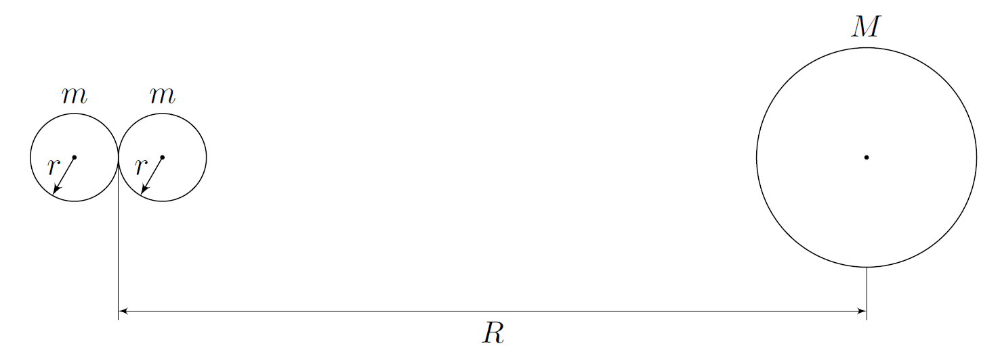
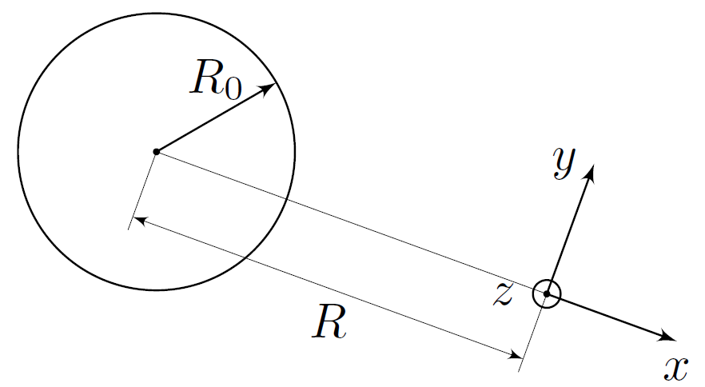
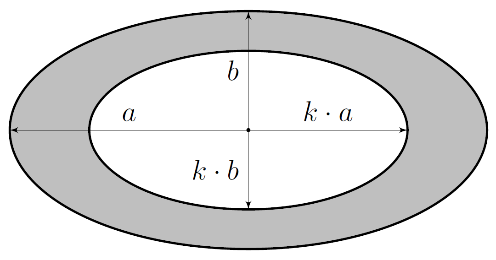

Y22 (2022) — English translation
Gravitational forces increase as the distance between bodies decreases. Therefore, one can observe how, with a strong approach, for example, liquid satellites and planets with a strong gravitational field, the shape of the satellites begins to change and they are ultimately destroyed. The Roche limit is the minimum possible radius of a circular orbit of a satellite $R_{Roche}$ revolving around a planet, at which the satellite is not yet destroyed under the influence of tidal forces caused by the gravitational field of the planet. In this problem you have to find the Roche limits for a binary planetary system, as well as for a liquid satellite.
Consider two identical spherical objects, the mass and radius of each being $m$ and $r$, respectively. Objects as a whole move in the gravitational field of a star with mass $M\gg{m}$ in circular orbits. Let us denote the distance from the point of contact of the objects to the star as $R$. Consider that $R\gg{r}$ and the centers of the objects are always on a straight line passing through the centers of the star (that is, the objects always face one side to the star). The gravitational constant is $G$.

All remaining points of the problem lead to finding the Roche limit for a liquid satellite. rotating around its own axis synchronously with the orbital rotation (in other words, the satellite always faces the same side towards the planet.). Let us denote the radius of the satellite's circular orbit as $R$. The gravitational constant $G$, the radius of the planet $R_0$, the density of the planet $\rho_M$ and the density of the liquid satellite $\rho_m$ are considered known at all points of the problem. The problem is solved in a reference frame rotating around the center of the planet with the orbital angular velocity of rotation of the satellite, and also under the following assumptions: 1) the center of the planet is stationary; 2) the influence of all forces, except centrifugal, gravity of the planet and the satellite’s own gravity can be neglected; 3) the liquid is incompressible; 4) in a rotating reference frame the fluid is motionless; 5) all linear dimensions of the satellite are much smaller than the radius of the circular orbit $R$. Also, when solving the problem, use a coordinate system, the origin of which is located at the position of the satellite’s center of mass, the $x$ axis is directed along a line drawn from the planet to the satellite, the $z$ axis is directed along the angular velocity vector of orbital rotation, and the $y$ axis complements the three basis vectors $\vec{e}_x, \vec{e}_y, \vec{e}_z$ to the right.

We will call the potential energy of a unit mass, i.e.: $$\varphi=\displaystyle\frac{W_p}{m} $$ В данной части задачи необходимо приближенно описать суммарный потенциал $\varphi_{\text{ext}}$ поля центробежной силы и гравитационного поля планеты вблизи равновесного положения спутника. Считайте, что в начале координат потенциал $\varphi_{\text{ext}_0}=0$.
In what follows, assume that the coefficients $B_1$ and $C_1$ are equal to zero. As accurate calculations show, taking them into account gives a very small increase in accuracy, incomparable with an increase in the complexity of calculations. Thus, in all further points: $$\varphi_{\text{внеш}}=A_1x^2 $$ From the form of the potential it becomes clear that the figure we are considering is a figure of rotation, and the quadratic form of the dependence of the potential makes it possible to guess the geometric figure.
In this part of the problem, you are asked to familiarize yourself with the gravitational field inside an elongated ellipsoid of revolution, filled throughout its entire volume with a substance with density $\rho$. In the Cartesian coordinate system $xyz$ the ellipsoid of revolution is described by the equation: $$\frac{x^2}{a^2}+\frac{y^2+z^2}{b^2}\leq{1}\qquad a\geq{b} $$ где $a$ и $b$ – соответственно большая и малая полуоси эллипса в любом сечении. содержащем начало координат. Напомним, что фокусы эллипса находятся на расстоянии $2c=2\sqrt{a^2-b^2}$ друг от друга, а эксцентриситет эллипса равен $e=\cfrac{c}{a}$.
Рассмотрим вспомогательную задачу: В рассматриваемом эллипсоиде создали полость, заданную уравнением: $$\frac{x^2}{k^2a^2}+\frac{y^2+z^2}{k^2b^2}\leq{1}\qquad k<1 $$

Let's return to the solid ellipsoid.
As can be seen, an ellipsoid of revolution can create a field that satisfies the condition of equipotentiality of the liquid surface. To do this, it is necessary to find the dependence of the coefficient $A_2$ on the eccentricity $e$ of the ellipsoid.
For a liquid satellite to be in equilibrium, its surface must be equipotential. In the previous part of the problem, we showed that the potential on the surface of a homogeneous ellipsoid of revolution can be represented as a function of only the coordinate $x$.
Source: https://pho.rs/p/2442